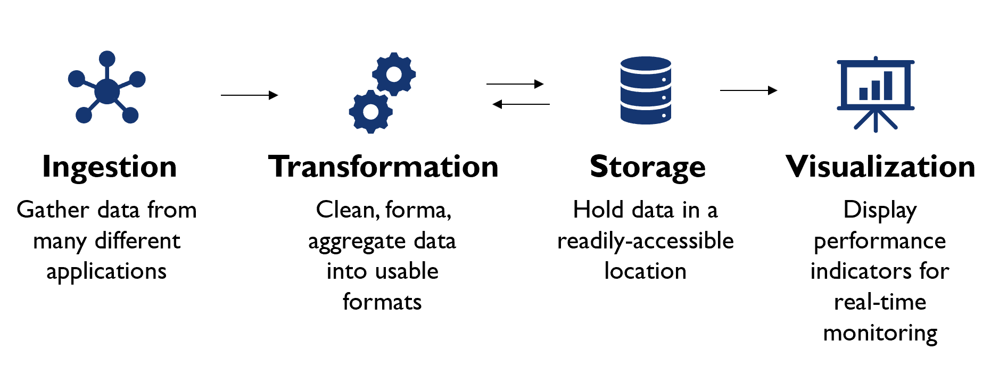
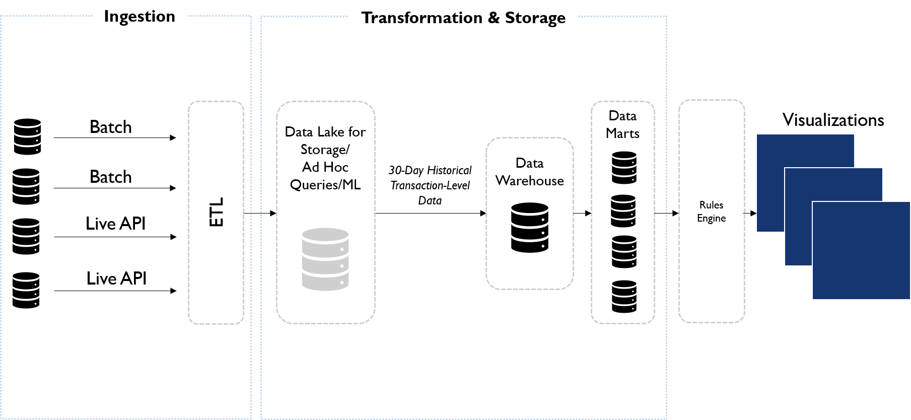
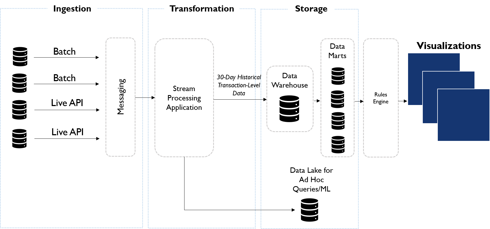
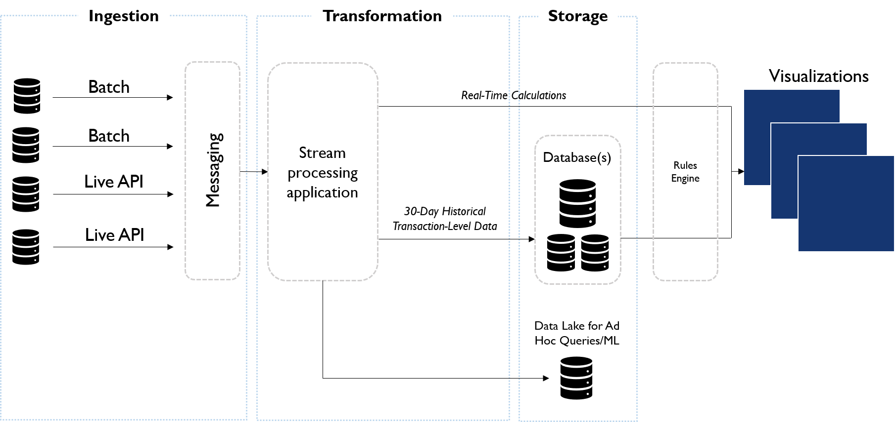
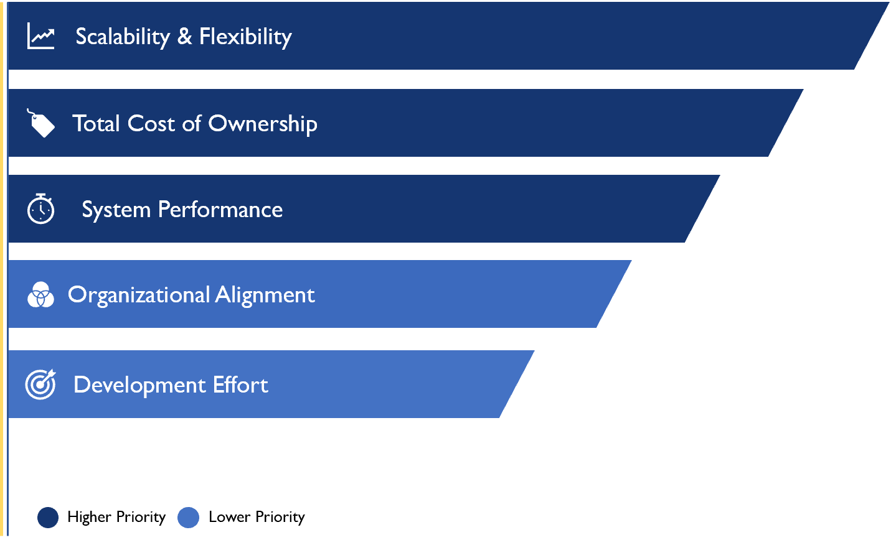
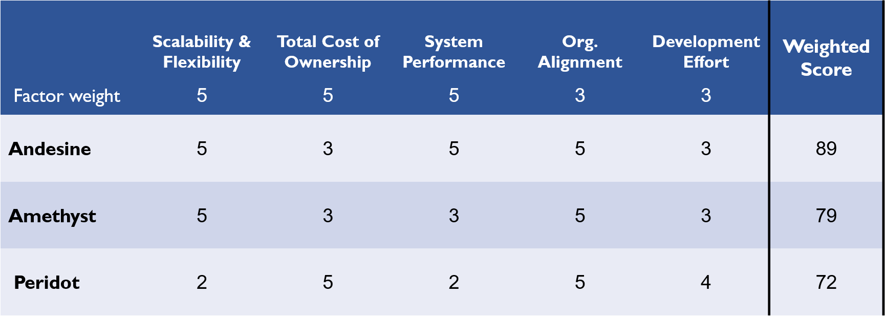
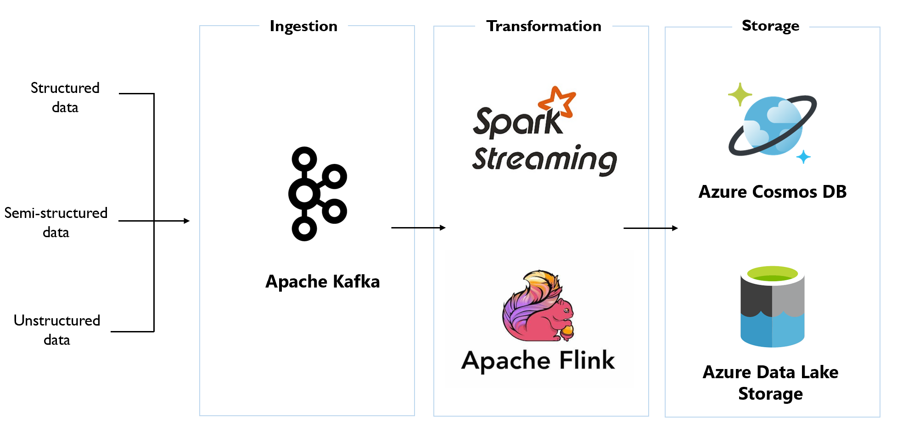

Capstone Project: Carnegie Mellon Univeristy, Masters in Information Systems Management
(concentration in Business Intelligence and Data Analytics)
Data architecture design for flexible and scalable solution that provides real-time insights into
critical system's performance at major US pharmaceutical chain.
Project Goals: Our primary goal was to design an IT architecture that
will allow executives in the office of the CIO of a $136 billion pharmaceutical chain
to monitor and report on the health and performance indicators of critical retail systems (e.g. POS, Supply Chain systems)
across the United States in real-time.
A sample of indicators to be monitored include:
(i) Receipt Print Time
(ii) Payment Authorization Time
(iii) Item Scan Time
Design Approach: The architecture design was broken up into 4 logical phases from the source data to final output.

For this project, the visualization phase was out of scope. We researched and identified potential solutions that met client requirements for all in-scope phases (ingestion, storage and transformation). The architectural design options were evaluated using a scorecard for a final recommendation before tools and vendors were selected.
After research, the team proposed 3 architectural options optimized for different strengths.
Option 1: This architectural design was proposed as a light-weight technology stack.
Data is extracted from source systems using traditional batch ETL solutions. The data is loaded into a cold storage data lake for adhoc queries and basic data analysis. From the data lake, the data is stored in a downstream datawarehouse for a 30-day period. Subsets of the transactional data are then stored in data marts for easier and faster access on the dashboard. Pre-defined rules are applied before analytics data is displayed on the dashboard.
The downside of this design is degraded performance in providing "near real-time" analytics because of the number of components. Also, there is an impact on solution reliability and fault-tolerance using traditional batch ETL process.

Option 2:Our second recommendation provides ...

Option 3:Our final recommendation provides ...

Following these proposals, we evaluated each architectural option against our client's key requirements using a weighted scorecard.



Please see capstone poster for more details on this project.